Acceso Seguro y Autenticación Corporativa
Autenticación basada en JWT con cifrado BCrypt de 10 rondas, control automático de intentos erróneos y descarte de sesión al cerrar pestaña.
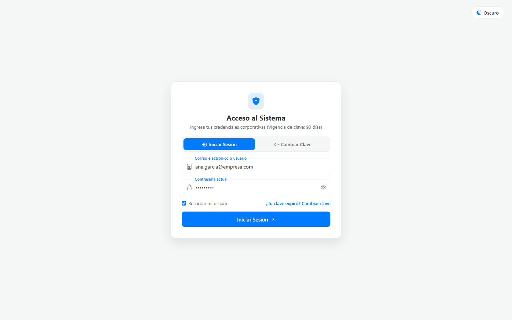
Procedimiento de Ingreso
- Ingrese usuario o correo institucional:
rambrocio. - Ingrese la contraseña criptográfica corporativa.
- Presione "Iniciar Sesión" para emitir el token Bearer institucional.
Políticas de Bloqueo
- 5 intentos fallidos consecutivos bloquean la cuenta (
LOCKED). - Expiración programada de contraseña cada 90 días con recordatorio preventivo.
Panel de Control e Indicadores en Vivo (Dashboard)
Visor de mando gerencial con KPIs reactivos en tiempo real, alertas de stock mínimo y desglose de facturación horaria.
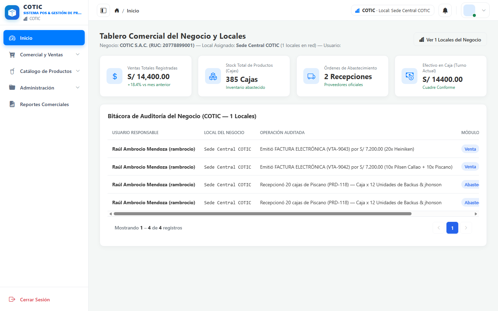
Métricas Consolidadas
- Ventas del Día: Recaudación bruta acumulada en mostrador.
- Transacciones: Total de comprobantes emitidos en la jornada.
- Stock Crítico: Conteo de artículos bajo el umbral mínimo de seguridad.
Conmutador Multi-Negocio
- El sidebar muestra permanentemente la identidad institucional COTIC.
- Permite alternar entre sedes y locales manteniendo los datos contextualizados.
Terminal de Punto de Venta POS (Ventas Mayor y Menor)
Terminal de cobro de alta velocidad con soporte para código de barras, venta por unidad suelta o empaque cerrado (cajas/fardos) y cuadre contable automático.
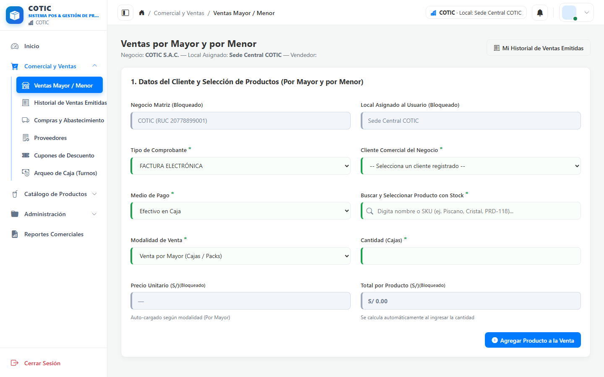
Modalidad de Venta
- Venta por Menor: Cálculo por unidad para público en mostrador.
- Venta por Mayor: Descuento por volumen en cajas o bultos cerrados.
- Cálculo automático de Subtotal Base + 18% Impuesto Oficial.
Medios de Cobro
- Efectivo (con cálculo de vuelto instantáneo).
- Tarjeta de crédito/débito, transferencia bancaria y billeteras digitales.
- Generación instantánea de Ticket / Boleta / Factura.
Historial de Ventas y Comprobantes Emitidos
Registro histórico auditable de todas las ventas emitidas con filtro avanzado por fecha, cliente o serie, y anulación controlada con reposición de inventario.
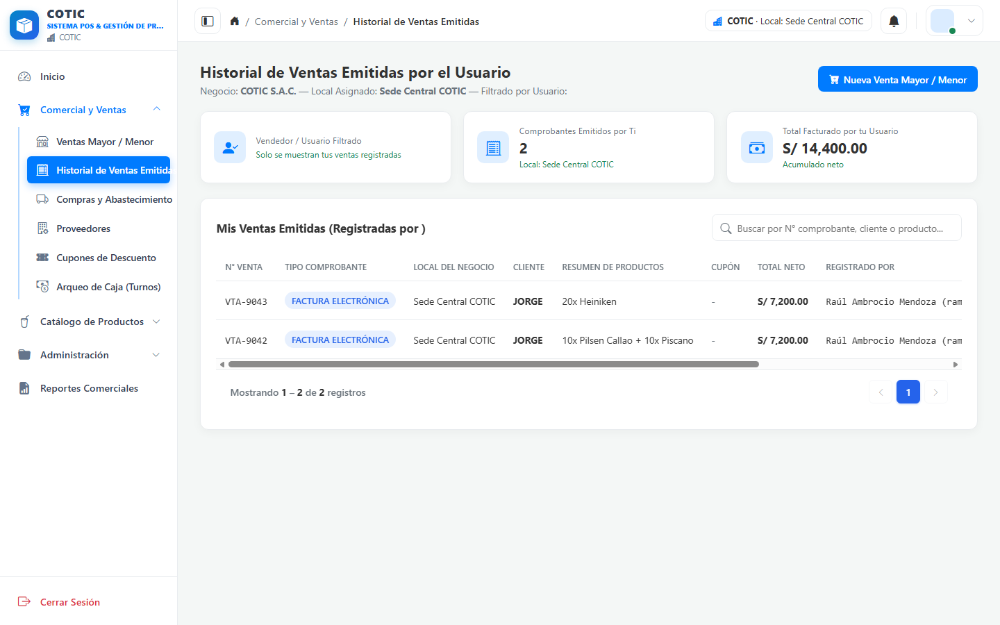
Inventario de Productos & Histórico de Compras y Ventas
Gestión integral de catálogo multirubro (abarrotes, bebidas, golosinas, limpieza) con control de stock por empaque y unidad, costo promedio ponderado y visor de trazabilidad.
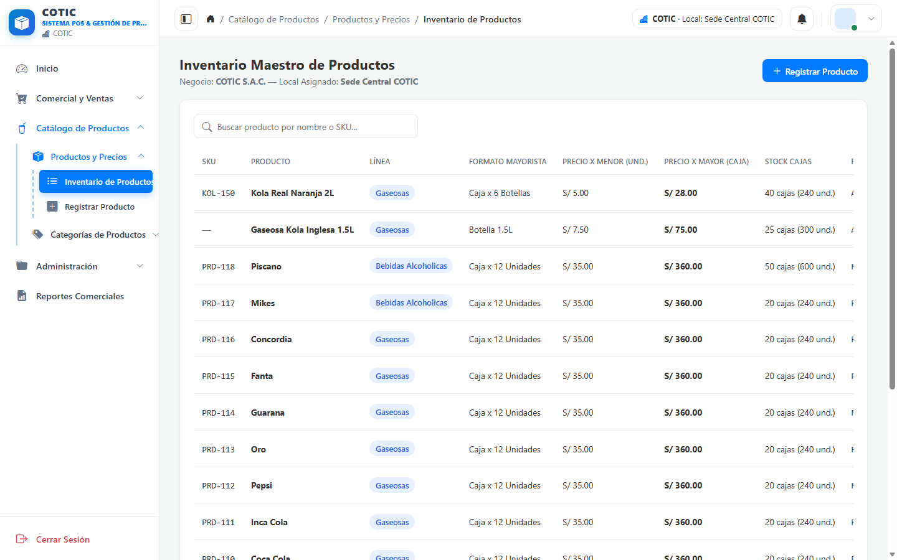
Funcionalidad Especial: Consulta de Histórico de Producto (Ejemplo con "Piscano" - SKU PRD-118)
Al hacer clic en el botón circular bi-clock-history del producto Piscano (SKU: PRD-118), se despliega el panel auditor con información real y detallada de compras (entradas) vs. ventas (salidas), mostrando la trazabilidad completa de lotes recepcionados y salidas en mostrador:
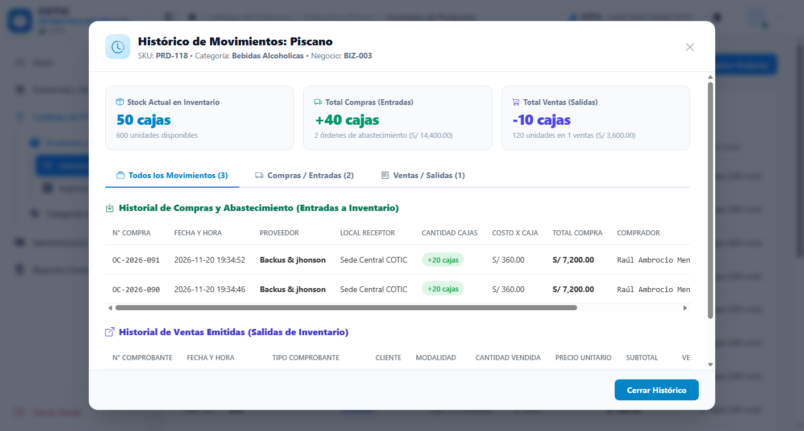
Entradas (Compras) — Producto Piscano
- Detalle de órdenes de abastecimiento al proveedor oficial con fecha y número de guía.
- Cantidad de cajas recepcionadas (ej. 25 cajas), costo unitario liquidado e inversión total asentada.
Salidas (Ventas) — Producto Piscano
- Comprobantes de venta emitidos en mostrador vinculados al SKU
PRD-118. - Diferenciación de salidas por mayor vs. menor, precio unitario y subtotal recaudado al centavo.
Categorías y Familias de Productos
Estructuración del inventario en familias comerciales para organización del catálogo POS y control analítico de ventas por segmento.
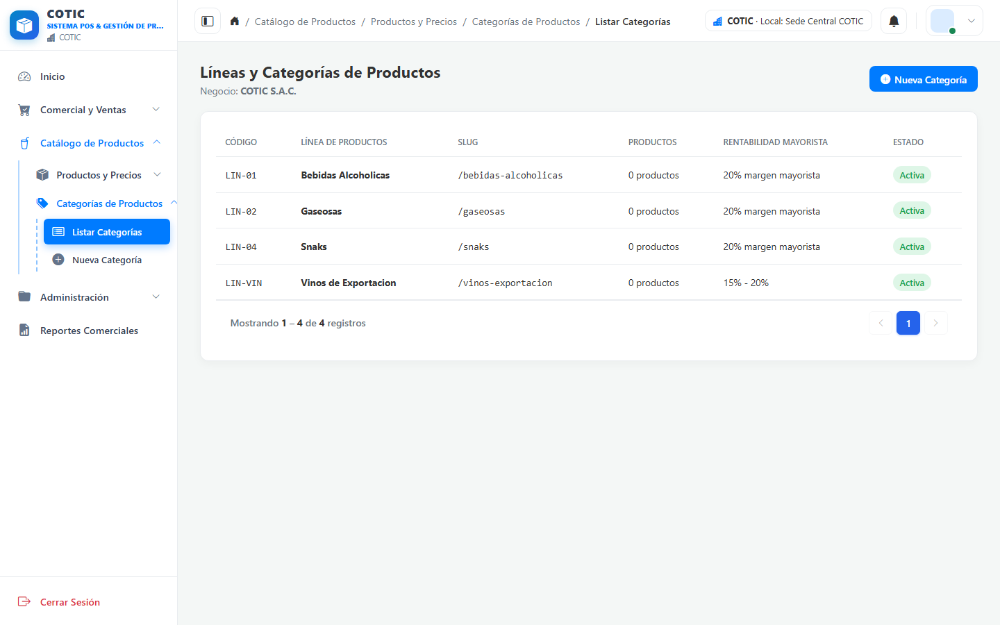
Compras y Abastecimiento de Mercadería
Registro formal de abastecimiento con aumento atómico de stock e impacto directo en el cálculo contable de costo medio de almacén.
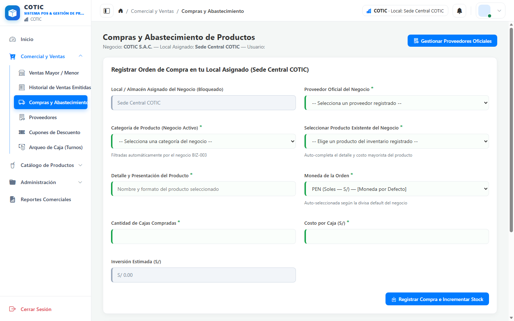
Directorio y Gestión de Proveedores
Directorio de mayoristas y distribuidores con RUC, datos de contacto, condiciones de crédito y líneas de suministro.
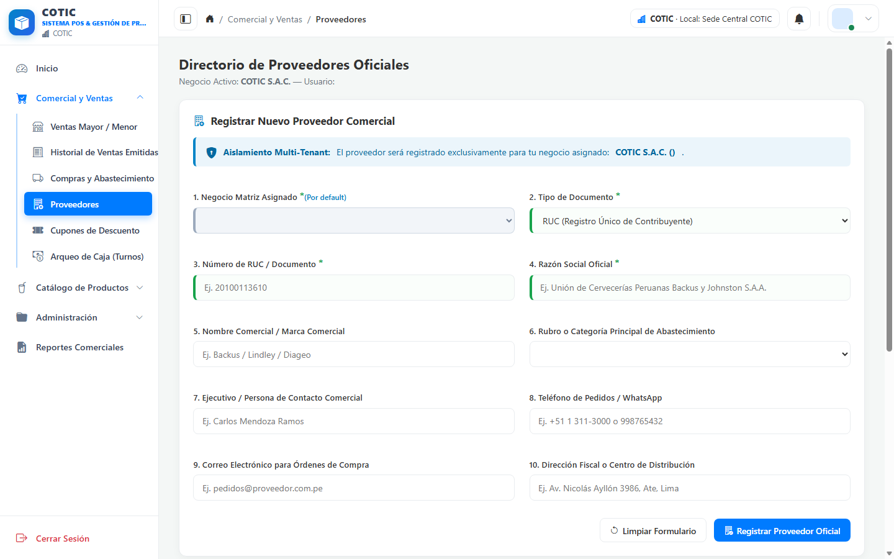
Arqueo, Movimientos y Cuadre de Caja
Control integral del flujo de efectivo: apertura con sencillo, registro de ingresos/egresos menores y cierre con comparación de efectivo esperado vs. contado físico.
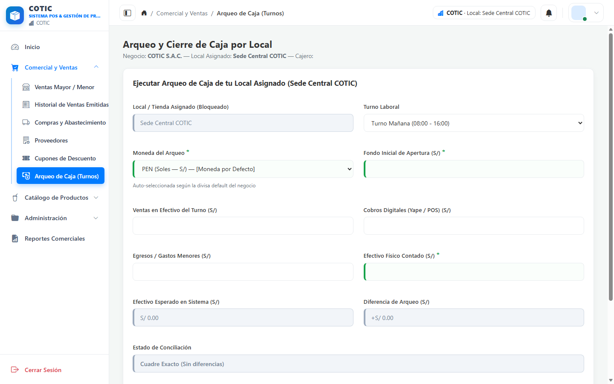
Cupones y Políticas de Descuento
Configuración de campañas de descuento (porcentaje o rebaja fija) con validación automática de vigencia y monto mínimo de compra en mostrador.
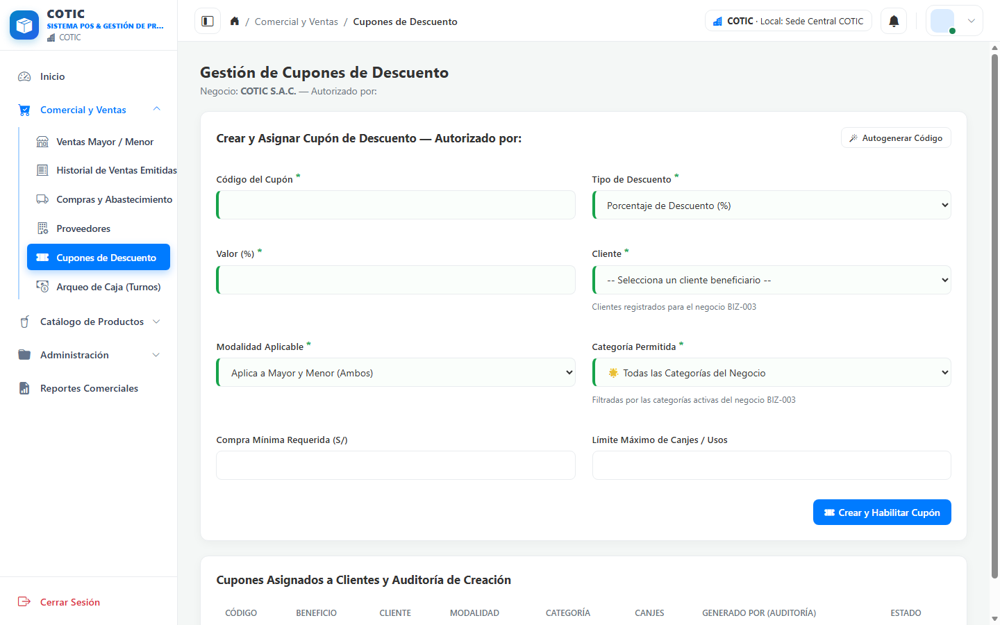
Cartera y Fidelización de Clientes
Gestión de clientes clasificados en Mayoristas VIP (con RUC y límites de crédito) y Minoristas Frecuentes (con DNI para boleta electrónica).
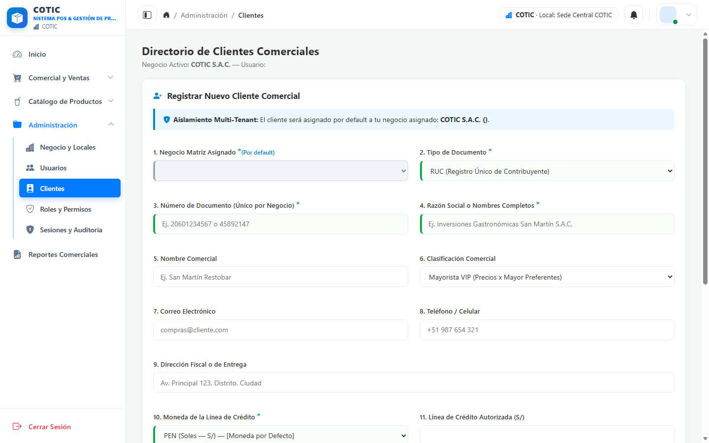
Configuración Multi-Empresa y Gestión de Sedes
Administración jerárquica de empresas del grupo, definición de sedes físicas, almacenes y series correlativas independientes.
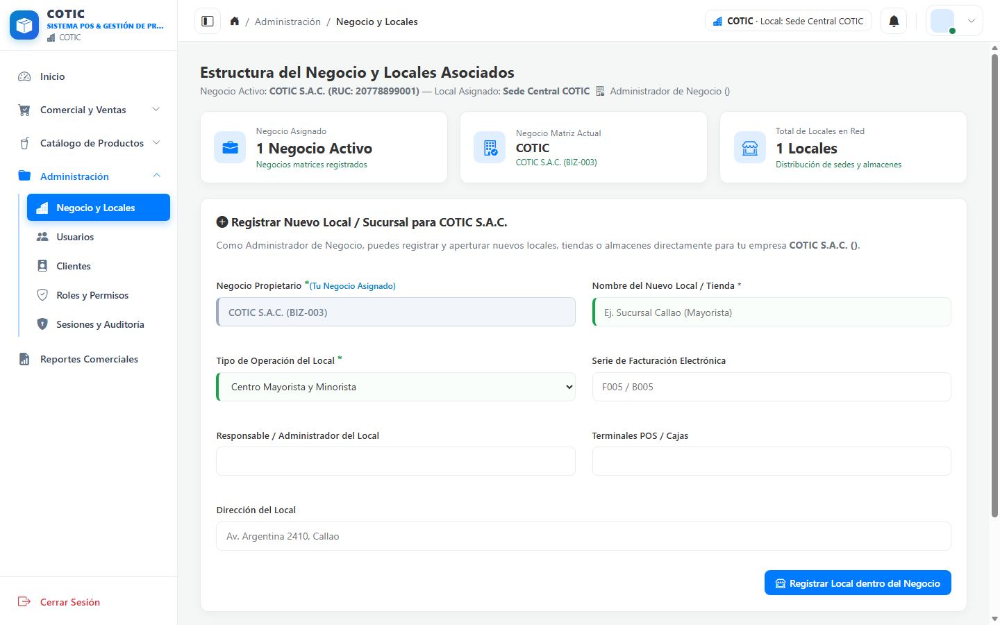
Administración de Usuarios y Operadores
Ciclo de vida de los colaboradores del sistema, asignación de sedes operativas, reseteo seguro de credenciales y activación/suspensión inmediata.
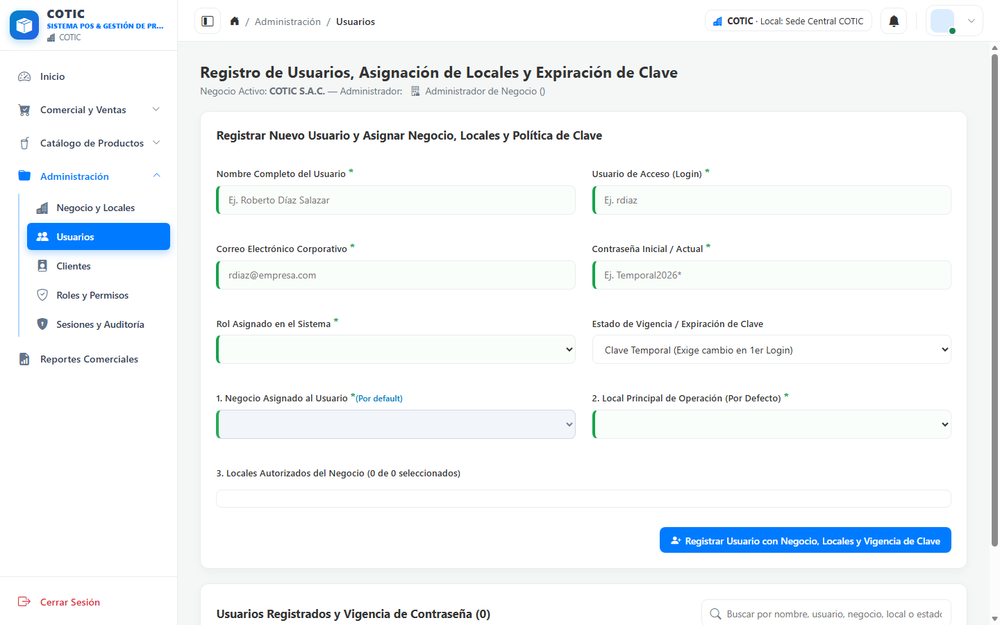
Matriz de Roles y Control de Acceso RBAC
Modelo granular de permisos por módulo bajo el estándar Role-Based Access Control, garantizando el aislamiento de funciones críticas.
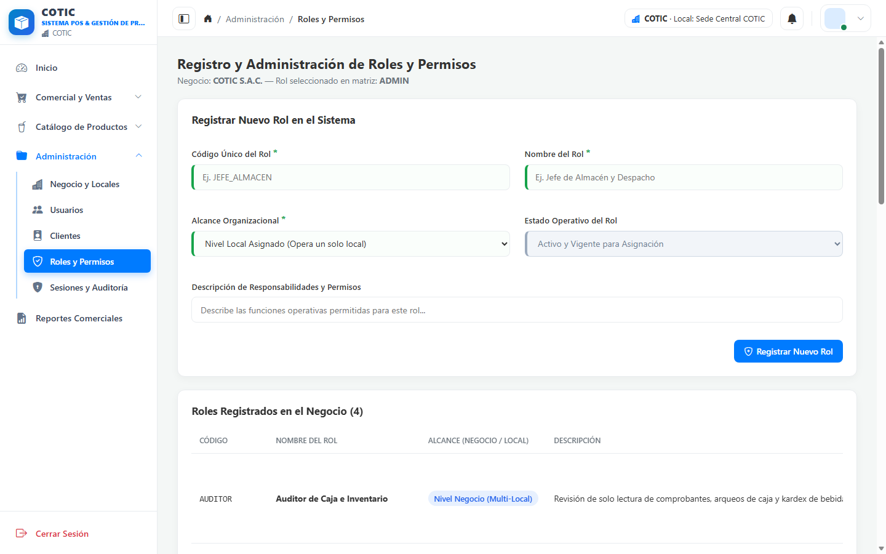
Monitoreo de Sesiones y Desconexión Forzada (Kill-Session)
Monitor en vivo de accesos concurrentes con IP, navegador, sistema operativo y botón Kill Session. Implementa aislamiento multi-empresa estricto: el usuario Raúl Ambrocio Mendoza (rambrocio) visualiza exclusivamente las sesiones correspondientes a COTIC S.A.C., mientras que los administradores globales (SUPERADMIN) pueden auditar la totalidad de negocios del ecosistema.
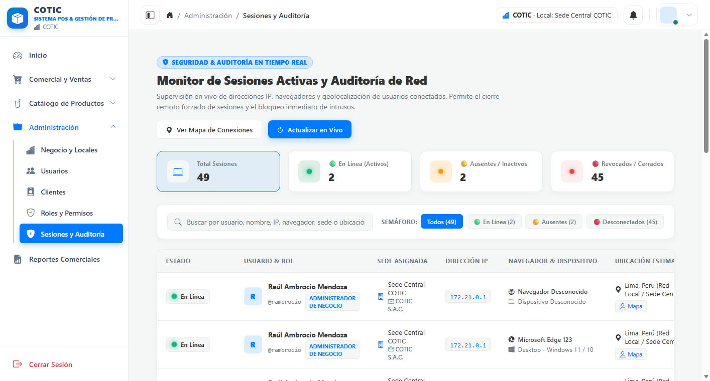